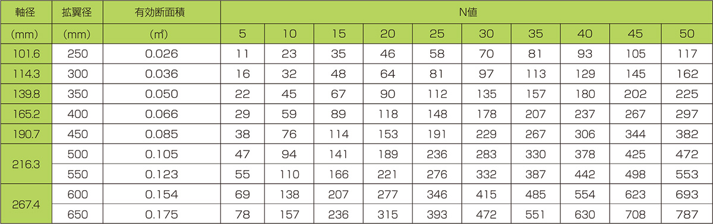

回転貫入工法は、無残土での杭施工を実現します。産業廃棄物(地盤改良材やセメントミルク等)は一切使用しないことにより、残土を全く発生させません。
独自の杭先端形状により、大きな支持力を発揮することにより、経済的な杭設計が可能です。
回転貫入方式で行う工法は、低騒音・低振動。都市部、住宅密集地、建物屋内などでの杭施工に最適です。
地盤調査に基づき無駄のない杭長、流通の簡素化、無駄な準備作業を省略、又拡翼付先端により杭軸が細径化可能になり、商品と施工のコストを抑えます。
回転貫入方式で行う工法は、低騒音・低振動。都市部、住宅密集地、建物屋内などでの杭施工に最適です。
スライドウェイト試験を採用
業界初！！
鋼材を見直し低コストを可能にした角形鋼管杭(100×100mm)を新たにラインナップ！！
| 支持地盤 | 砂質地盤(礫質地盤を含む) |
|---|---|
| 試験方法 | 標準貫入試験 |
| 先端N値 | 砂質・礫質地盤(4≦N値≦50) |
| 鋼管の寸法 | φ101.6～φ267.4 |
| 拡翼径の寸法 | φ250～φ650 |
| 最大施工深さ | 130D以下かつ34.7m以下 |
| 適用する 建築物の規模 |
延べ床面積の合計が50,000㎡以下の建築物 |
先端地盤：砂質地盤(礫質地盤を含む)
認定番号：TACP-0355
| 支持地盤 | 粘土質地盤 |
|---|---|
| 試験方法 | 標準貫入試験 |
| 先端N値 | 粘土質地盤(4≦N値≦50) |
| 鋼管の寸法 | φ101.6～φ267.4 |
| 拡翼径の寸法 | φ250～φ650 |
| 最大施工深さ | 130D以下かつ34.7m以下 |
| 適用する 建築物の規模 |
延べ床面積の合計が50,000㎡以下の建築物 |
先端地盤：粘土質地盤
認定番号：TACP-0356
| 支持地盤 | 粘性土地盤（礫質地盤を含む） |
|---|---|
| 試験方法 | スクリューウエイト貫入試験 ラムサウンディング試験 |
| 先端N値 | 4≦N値≦20 |
| 鋼管の寸法 | φ101.6～φ165.2、100×100 |
| 拡翼径の寸法 | φ250～φ400 |
| 最大施工深さ | 130D以下かつ14.5m以下 |
| 適用する 建築物の規模 |
延べ床面積の合計が500㎡以下の建築物 |
先端地盤：砂質土地盤(礫質地盤を含む)
GBRC性能証明 第10-08号
| 支持地盤 | 粘性土地盤 |
|---|---|
| 試験方法 | スクリューウエイト貫入試験 ラムサウンディング試験 |
| 先端N値 | 4≦N値≦20 |
| 鋼管の寸法 | φ101.6～φ165.2、100×100 |
| 拡翼径の寸法 | φ250～φ400 |
| 最大施工深さ | 130D以下かつ14.5m以下 |
| 適用する 建築物の規模 |
延べ床面積の合計が500㎡以下の建築物 |
先端地盤：粘性土地盤
GBRC性能証明 第10-08号
鋼管杭の腐食については、建築分野における通常の場合、鋼管の外側1mmを腐食しろとして考慮すればよいとされています。
鋼管杭の腐食については、各種地盤に設置された腐食試験用L型杭に対する腐食の実測調査から、以下の事項が指摘されている。
1）鋼材の腐食は実測された10年間にわたる年間両面腐食率も平均値を設置された条件を考慮せずに機械的に求めると0.0106mmとなる。
2）全試験杭中、最大の年間両面腐食率の値は0.0297mmである。実測された年間腐食率の標準偏差は0.005mmであるので、腐食率の最大値は平均プラス4倍の標準偏差を超えない。
3）全試験杭中、最大の年間両面腐食率の値は0.0297mmである。実測された年間腐食率の標準偏差は0.005mmであるので、腐食率の最大値は平均プラス4倍の標準偏差を超えない。通常の場合は杭の外側1mmを腐食しろとして考慮すればよい。この値は、平均値プラス2倍の標準偏差の値、0.02mmの年間両面腐食率を設定し、腐食が杭の設置後の経過年数によらず一様な速さで進むとした場合、50年経過した後の腐食しろの値である。
ここでの腐食率は、鋼杭の両面の腐食の和を示しているが、ここでは安全側の評価を行う事とし、鋼管杭の外側に腐食しろを考慮する。
日本建築センター発行「地震力に対する建築物の基礎の設計指針(平成3年)」による
※本工法は、杭状地盤補強材として使用する事も可能である。

※上記の支持力には、杭周面摩擦力を含みません。
※100×100の角形鋼管の外周で囲む面積と等しくなる円形(φ112.8mm)として計算したAp
※上記の支持力には、杭周面摩擦力を含みません。
(腐食しろを考慮しない場合)
本工法は、切り欠きを施した鋼管に2枚の半円形鋼板の羽根と掘削刃を鋼管に溶接接合したものを、回転させることによって地盤中に貫入させ、これを杭として利用する技術です。